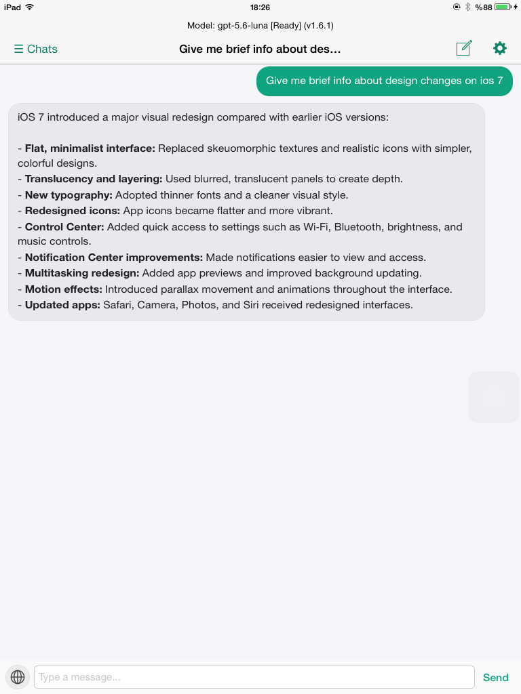
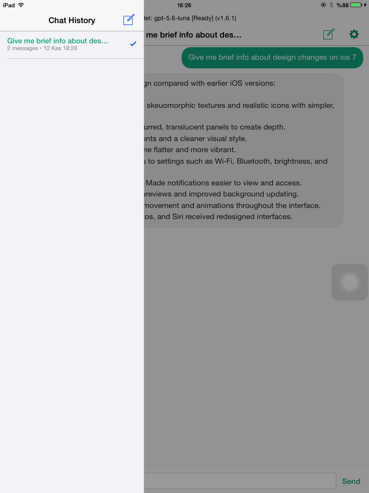
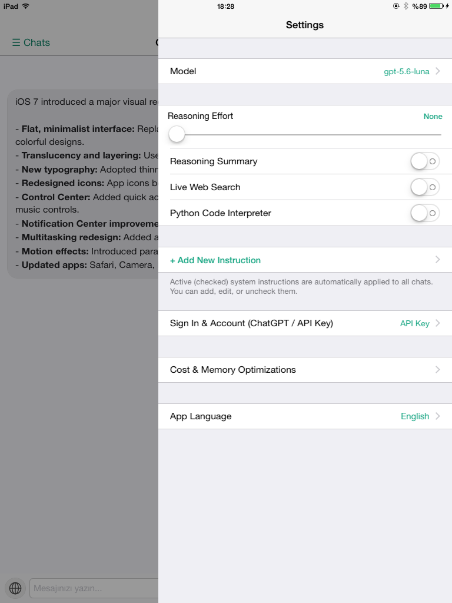
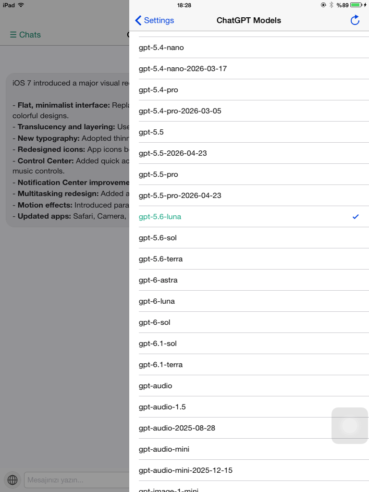
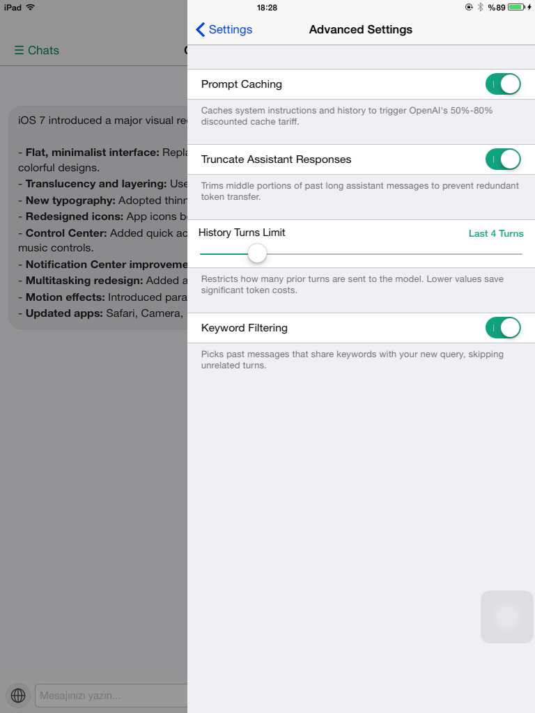

ChatGPT Retro
ChatGPT Retro brings contemporary artificial intelligence directly to classic iOS 8 architecture. Built specifically for 32-bit (armv7) and 64-bit vintage Apple devices, it delivers responsive conversations with the entire suite of modern OpenAI GPT models without web workarounds.





Engineered in Objective-C using low-overhead Foundation and UIKit primitives. The networking engine utilizes an embedded static build of libcurl with modern OpenSSL TLS 1.3 cryptography, completely bypassing iOS 8's obsolete security root certificates without triggering SSL handshake errors.
Dynamically queries OpenAI servers to list available models, including modern GPT-4o, GPT-5, and reasoning series. Provides an interactive Apple slider to configure reasoning effort levels (Low, Medium, High, Maximum) directly from the interface.
Create, manage, and toggle multiple system prompts simultaneously. Customize behavioral rules, professional domains, or translation instructions with swipe-to-edit and instant checkmark activation.
Incorporates prompt caching triggers (saving 50% to 80% on OpenAI tokens), intelligent TF-IDF keyword history filtering, automatic assistant message truncation, and a sliding turn window slider to keep operational token usage minimal.
Supports both standard platform API keys (stored safely in local sandboxed storage) and direct ChatGPT account plan sharing via the official OAuth PKCE verification protocol.
- Target Devices: Confirmed and fully tested on iPad Mini 1 (iOS 8.4.1). Other iOS 8 devices have not been tested.
- Over-The-Air (OTA) Method: Open this page directly inside Mobile Safari on a jailbroken device with AppSync Unified installed, then tap "Install Wireless OTA".
- Manual Sideloading: Download the .IPA binary and deploy via Cydia Impactor, Sideloadly, or Apple Configurator using your personal developer certificate.